Megérkeztünk Leptokaryába! Az Erasmus+ program keretében 85 PG-s diák kezdte meg kéthetes görögországi szakmai gyakorlatát. A tenger és az Olympos-hegy gyönyörű látványa fogadott minket, a tájékoztató után pedig mindent előkészítettünk a munka kezdésére.
A gépészek Kateriniben, a logisztikai főiskolán interaktív fizikai és tudománytörténeti élményekkel gazdagodtak Christos Petousis tanár úr vezetésével. Az informatikusok görög instruktoruk segítségével saját lakóhelyüket bemutató weboldalakat készítettek angol nyelven. A sikeres szakmai napok után október 25-én Thessalonikibe látogatott a csoport, ahol a város gazdag történelmével és nyüzsgő nevezetességeivel ismerkedtek meg.
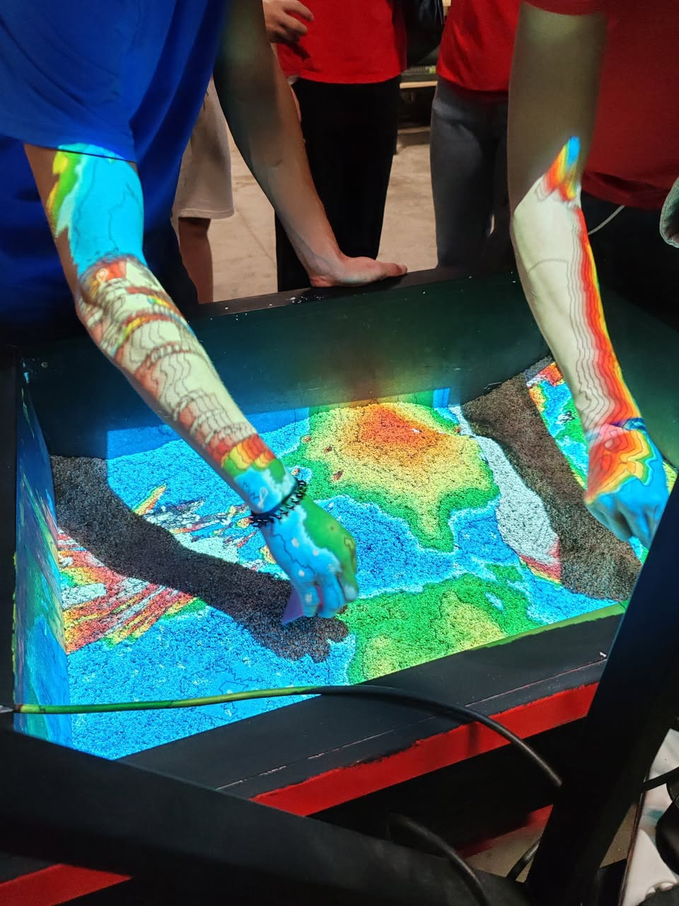
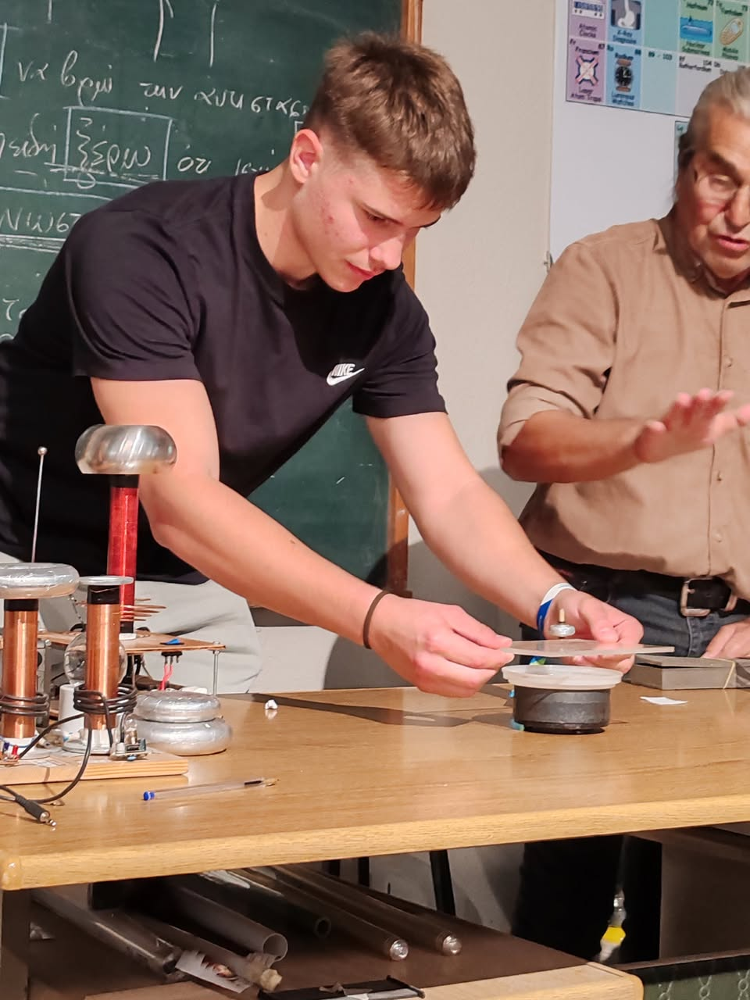
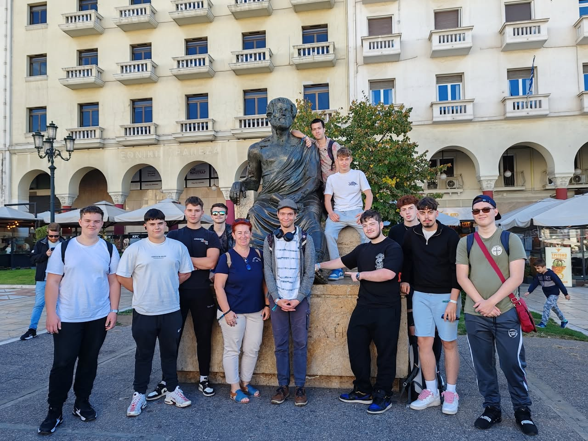
Október 26-án a csapat a lenyűgöző természeti csodához, a Meteorák kolostoraihoz látogatott el. Október 27-én pedig folytatódott a szakmai munka: a szoftverfejlesztők kedvenc együttesükről, az informatikus rendszerüzemeltetők flex-stílusú weblapokat készítettek példaképükről, míg a gépgyártás-technológiai technikusok Lego robotokat építettek és programoztak az Olympus Education Centerben.
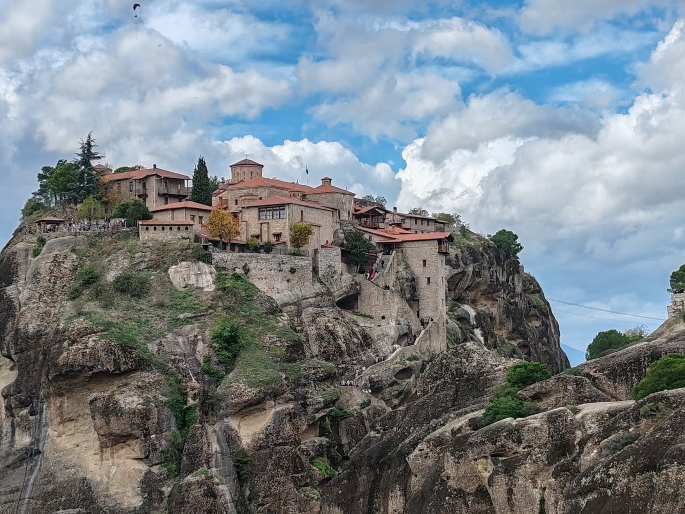
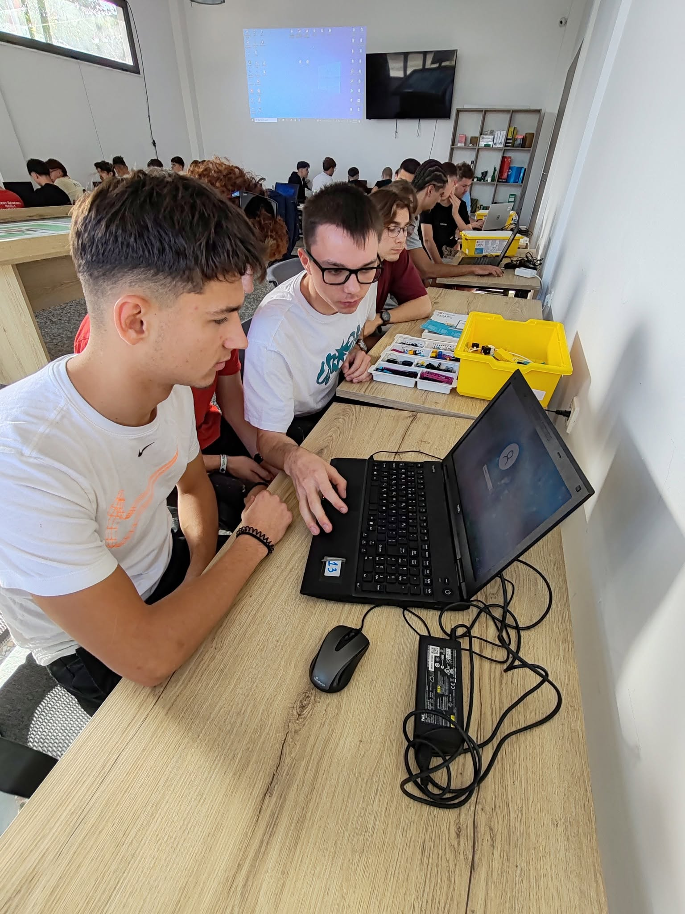
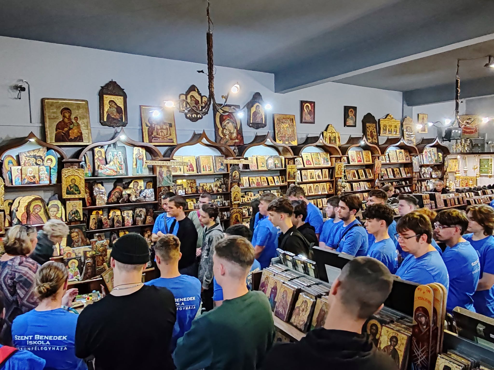
Görögország nemzeti ünnepén, az OXI-napon a PG-sek a leptokaryai felvonulásokon ünnepeltek. Ezt követően az informatikusok angol nyelvű önéletrajz-weboldalakat készítettek, a gépészek pedig október 29-én a larisszai ALFA WOOD GROUP fafeldolgozó gyárában (faipari termékek, fenntartható technológiák) tettek szakmai látogatást Giannis Delfos vezetésével.
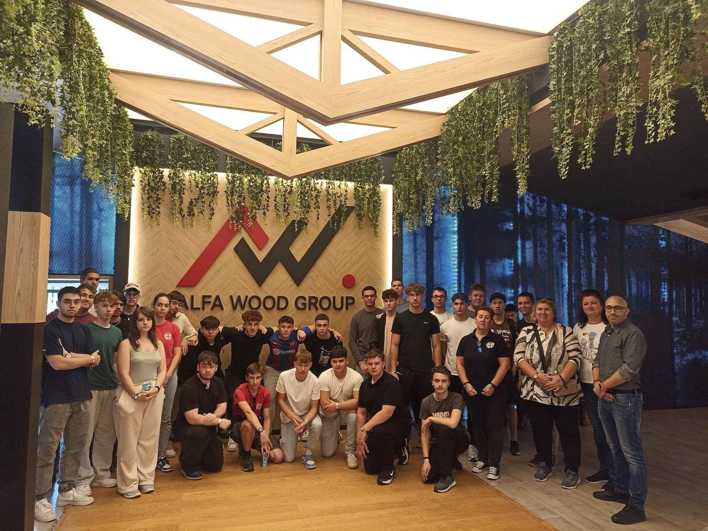
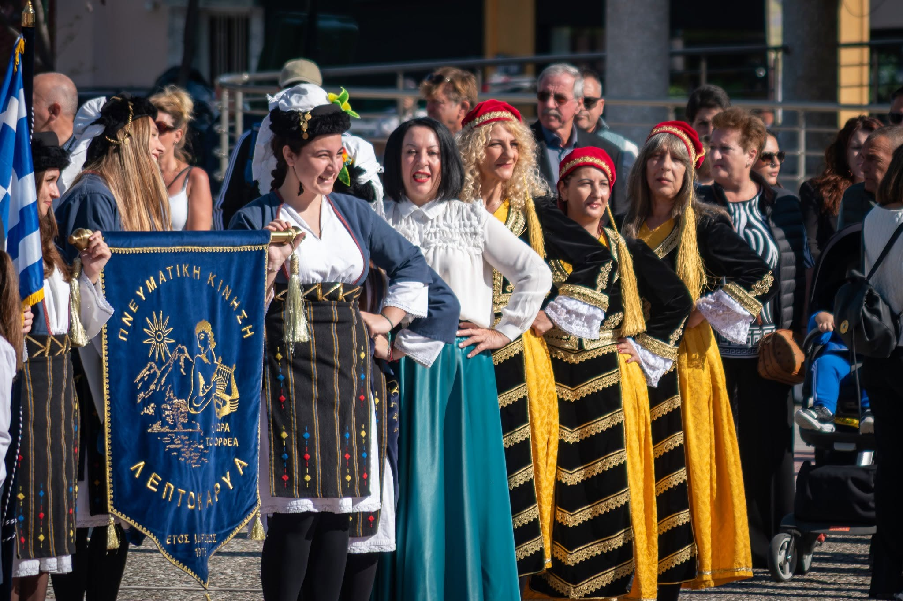
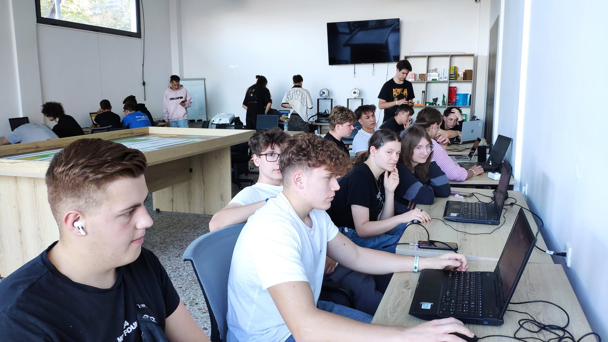
Október 30-án a gépészek kreatív feladatként szenzorokkal (közelség-, szín- és nyomásérzékelő) felszerelt, önállóan közlekedő, szöveget kiíró és leparkoló Lego robotokat építettek és programoztak, míg az informatikusok csoportokban weblaptervezéssel foglalkoztak. Október 31-én, pénteken a csoport hajóval Skiathos szigetére látogatott, ahol a tengerparti szuvlakizás mellett feledhetetlen élményekkel fedezték fel a mesebeli sziget zugait.
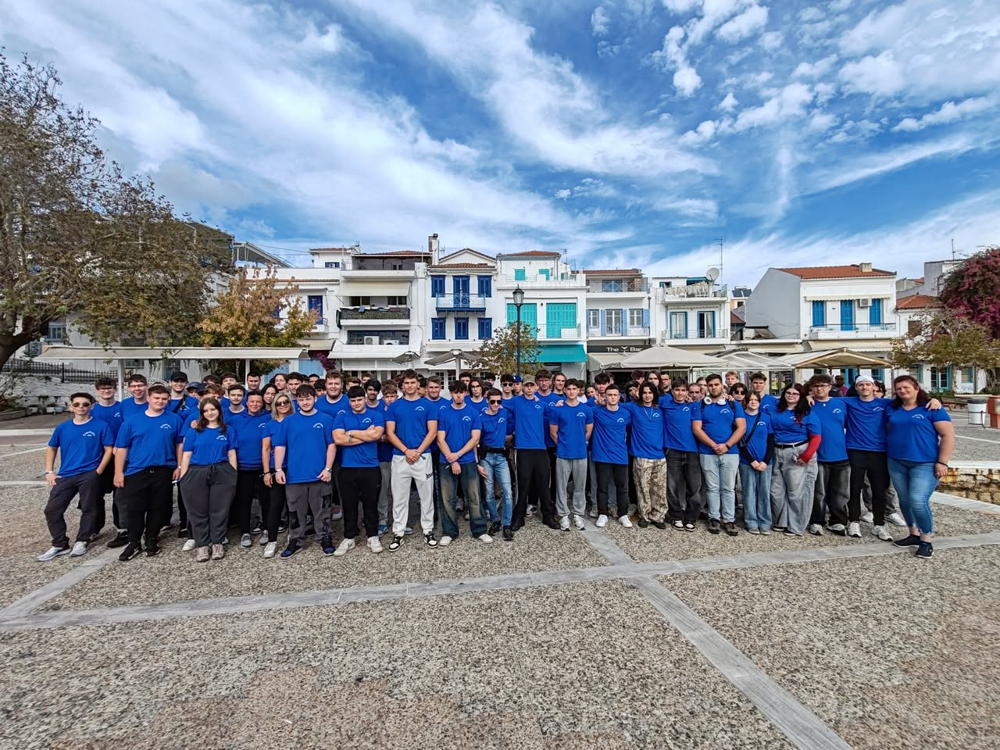
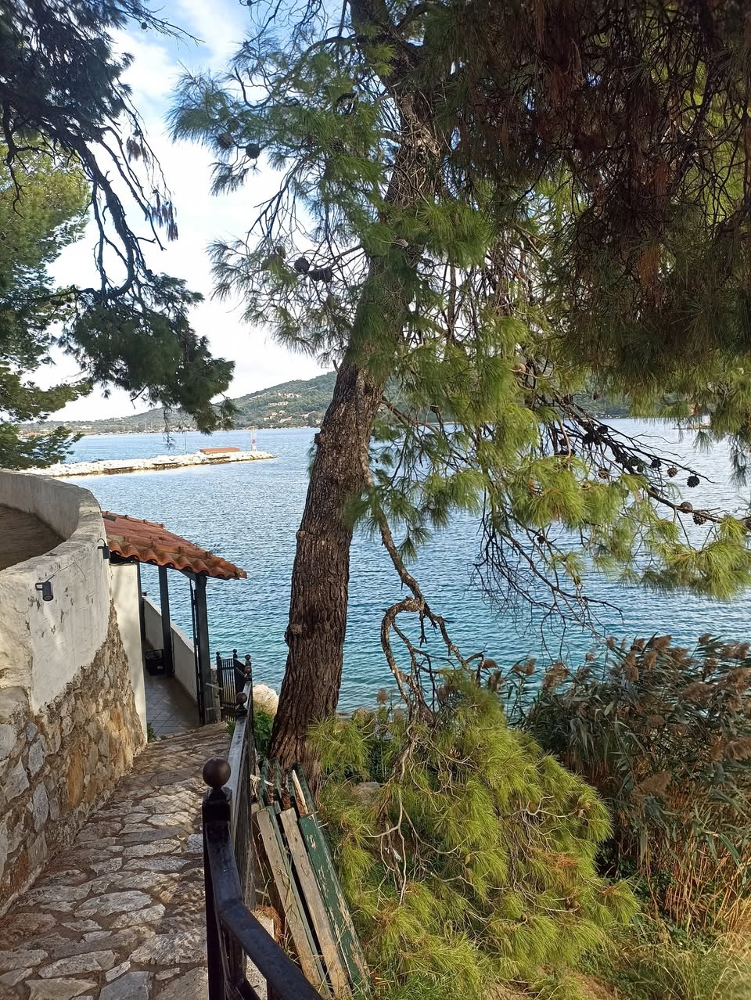
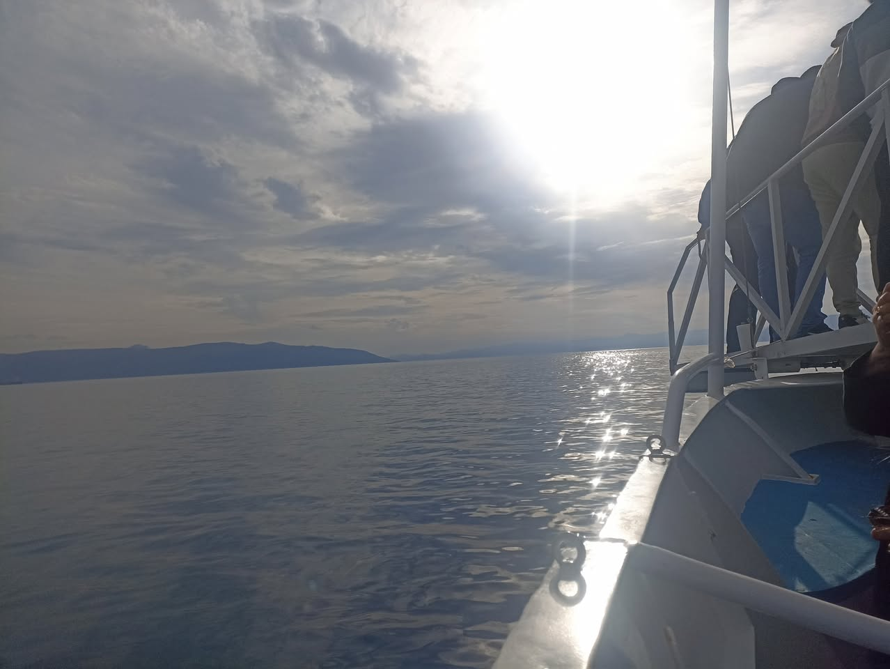